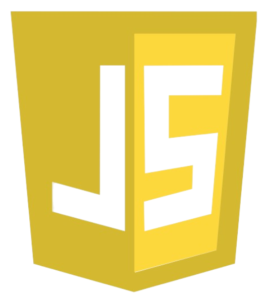

Modulação no JavaScript
Para usar módulos em JavaScript, você pode usar as palavras-chave export e import. A exportação permite que você disponibilize funcionalidades de um módulo para serem usadas em outros módulos. A importação permite que você traga funcionalidades de outros módulos para o seu código.
Existem dois tipos principais de exportação em JavaScript: nomeada e padrão. A exportação nomeada permite exportar múltiplas funcionalidades de um módulo, enquanto a exportação padrão permite exportar uma única funcionalidade como padrão do módulo.
Em um projeto JavaScript, você pode ter um módulo que exporta funções de saudação e despedida, e outro módulo que importa essas funções para usá-las. Isso ajuda a manter o código organizado e facilita a colaboração entre desenvolvedores.
Formatação Consistente: Seguir um estilo de formatação consistente ajuda na leitura. Utilize indentação e espaçamento de maneira regular.
Tratar Erros de Forma Elegante: Ao invés de usar códigos de retorno para indicar erros, use exceções. Isso torna o código mais limpo e os fluxos de erro mais fáceis de seguir.
Evitar Repetição: "Don't Repeat Yourself" (DRY) é um princípio fundamental. Reutilize código ao invés de copiá-lo.
Testes Automatizados: Escreva testes para garantir que o código funciona conforme esperado e para facilitar futuras modificações.
Benefícios da Modulação
Reutilização de Código: Módulos permitem reutilizar código em diferentes partes do projeto ou em projetos diferentes.
Manutenção: Facilita a manutenção do código, pois cada módulo é responsável por uma funcionalidade específica.
Organização: Ajuda a organizar o código em partes lógicas e gerenciáveis.
Evita Conflitos de Nomes: Cada módulo tem seu próprio escopo, evitando conflitos de nomes entre diferentes partes do código.
Ferramentas e padrões
ES Modules (ESM): Padrão moderno de módulos introduzido no ECMAScript 2015 (ES6). Utiliza as palavras-chave import e export.
CommonJS: Sistema de módulos usado principalmente em Node.js. Utiliza require para importar e module.exports para exportar.
Exemplos práticos
Exemplos Práticos: Um exemplo comum de modulação é a criação de bibliotecas ou pacotes em linguagens como Python. Outro exemplo é a arquitetura MVC (Model-View-Controller) em frameworks web, onde o código é dividido em três partes principais com responsabilidades distintas.